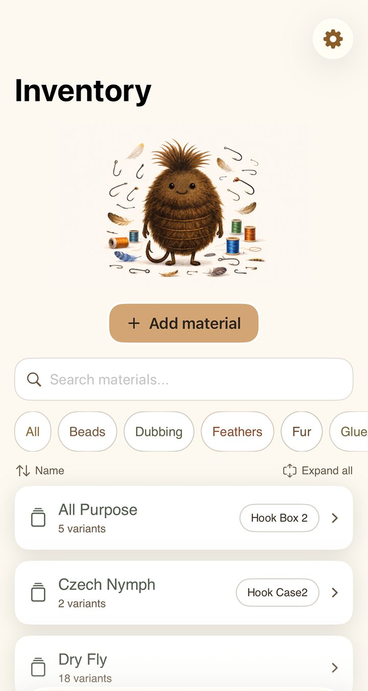
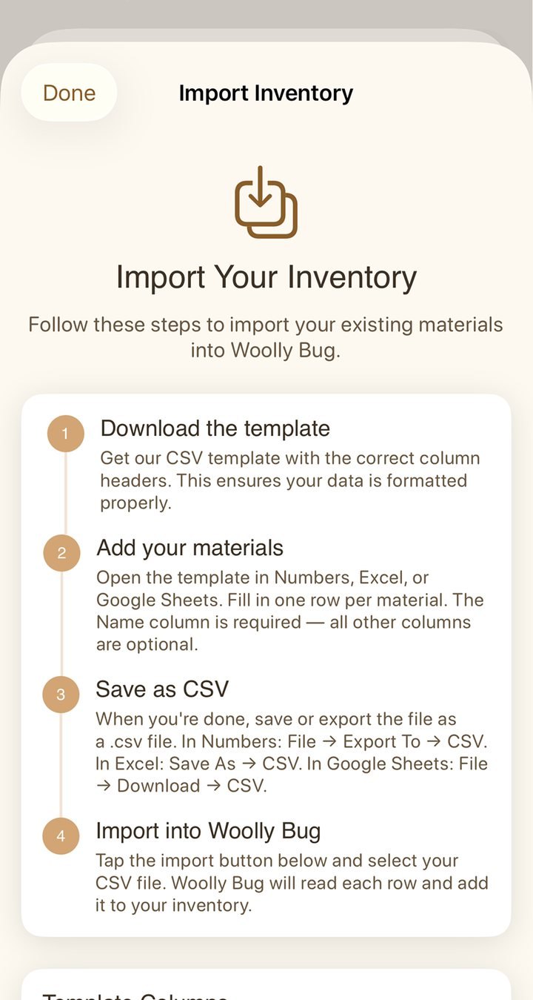

Material inventory
Every feather, bead and spool, with sizes, colours, quantities and exactly which box it's in.
Woolly Bug keeps track of every material on your bench, every pattern you tie and every hook you could swap in.
DownloadFree on iPhone and iPad

Every feather, bead and spool, with sizes, colours, quantities and exactly which box it's in.
Search 700+ hooks by shank, wire, gape and eye, then see the closest match from every other maker.
More about Hook FinderSave the full recipe for every fly you tie, from hook and thread down to the ribbing.
Woolly Bug checks each pattern against your stash and shows exactly what's missing.
Never buy the same spool twice
Build a shopping list at the bench and tick it off at the shop. Anything you already own is flagged before you pay for it again.
Import an existing list from Excel, Numbers or Google Sheets. Export the lot whenever you like.

Syncs between iPhone and iPad through the cloud, or directly over Wi-Fi when there's no signal.
Woolly Bug started with a cluttered bench, a scribbled materials list, and one too many trips to the shop for a spool that was already in a drawer. It's the tool we wished existed, built around how fly tyers actually work.
Add materials in secondsSizes, colours and quantities are suggested as you type.
See what you can tieEvery saved pattern is checked against what's on your bench.
Backed up automaticallyYour stash syncs to the cloud, so a lost phone isn't a lost inventory.
No signal neededEverything works offline, at the bench or at the river.
Everything lives on your device, so it works at the river. It syncs when you're back online.
Export your whole inventory to CSV any time, and open it in any spreadsheet.
Download free and add your first materials today. Upgrade when you need more room.
Yes. Woolly Bug is free to download from the App Store, so you can start cataloguing your materials right away. The free version has some usage limits, with an upgrade available when you're ready for more.
No. Woolly Bug stores everything on your device, so it works fully offline at the bench or on the water. When you're back online, your data syncs securely to the cloud as a backup.
Everything on your bench: hooks, threads, dubbing, hackle, feathers, beads, wire, flash and more. Each item supports sizes, colours, brands and quantities, so your records match real life.
Yes. Save your patterns with their full recipes and Woolly Bug cross-checks them against your stash, showing at a glance which flies you can tie and which materials you're missing.
Woolly Bug runs on iPhone and iPad with iOS 17 or later. Your inventory syncs across devices, so you can add materials on your phone at the shop and browse patterns on your iPad at the bench.